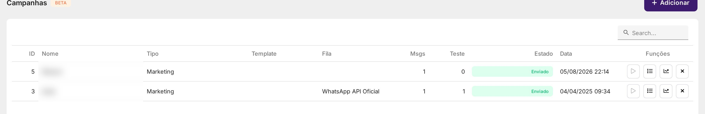
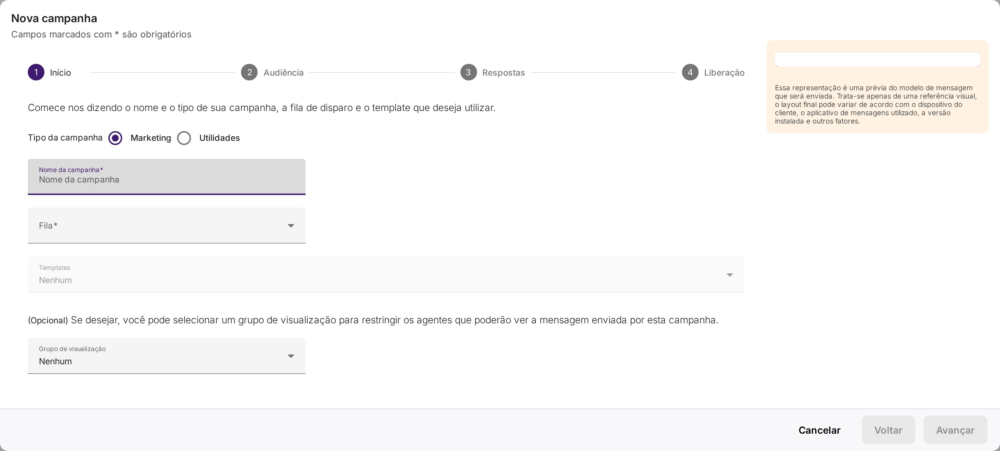
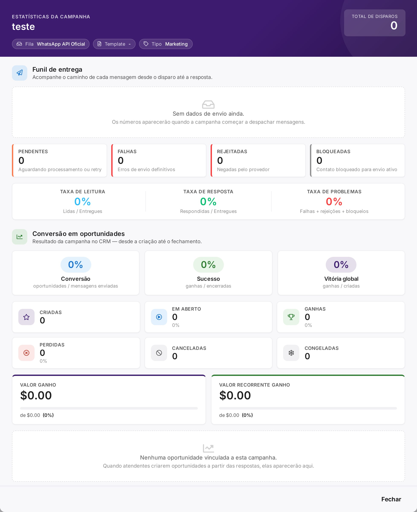

Campanhas de Disparo Ativo (WhatsApp Cloud API)
Como montar um disparo em massa por template aprovado, decidir quem recebe, em que ritmo e com qual liberação, e acompanhar o que aconteceu com cada mensagem até virar — ou não — oportunidade no CRM. O módulo ainda aparece marcado como BETA na tela.
1. O que é uma campanha aqui
Campanha é o envio ativo de uma mensagem de template, em massa, por uma fila de WhatsApp Cloud API. Você escolhe o template aprovado, monta a audiência com os destinatários e o valor de cada variável do corpo, e o sistema cria um registro de envio por linha — é esse registro que o disparador consome depois, no ritmo que você definir.
A campanha não é uma automação e não é uma URA. Automação e URA reagem a algo que chegou (mensagem, chamada, gatilho). Campanha começa a conversa: sai do sistema para uma lista de números que ainda não falaram com você. Quando o cliente responde, o atendimento nasce como qualquer outro e cai no destino que você indicou na etapa de respostas.
2. Quando usar
O uso certo é o que só o disparo ativo resolve. Se o cliente já está conversando com você naquele momento, o caminho é o atendimento, não a campanha.
| Cenário | O que o operador faz | O que o sistema faz |
|---|---|---|
| Aviso de utilidade para uma carteira mudança de horário de atendimento, novo endereço da loja, janela de manutenção |
Separa os números da carteira, escolhe um template de Utilidades e agenda o disparo para o início do dia seguinte. | Cria um registro por destinatário, respeita o horário agendado, abre atendimento para quem responder e conta entregas, leituras e falhas no painel. |
| Oferta segmentada promoção de uma linha de produto para quem já comprou daquela linha |
Monta a lista a partir do filtro do CRM, usa um template de Marketing com variáveis de nome e produto e limita o envio por hora para não travar a fila. | Distribui o disparo ao longo do dia, marca quem pediu para não receber marketing e liga as respostas a oportunidades do funil. |
| Retomada de base parada clientes que não compram há três meses |
Gera a audiência, deixa a campanha em Envio manual, confere a prévia do template e libera quando o time estiver pronto para atender as respostas. | Mantém tudo pendente até a liberação; nada sai antes disso. |
| Teste antes de valer para todos template novo, texto revisado, oferta com botão |
Escolhe Enviar teste agora e aguardar liberação e define o tamanho do lote de teste. | Dispara só as primeiras linhas da audiência e segura o restante até a aprovação. |
3. A tela de campanhas
A lista abre na rota /base/config/campaignslist. É uma grade simples, com busca e um único botão de criação: Adicionar. Cada linha é uma campanha — não um envio.

| Coluna | O que mostra |
|---|---|
| ID | Identificador da campanha. É o número que você usa em qualquer chamada de API ou suporte. |
| Nome | O nome dado na criação. É o rótulo que aparece no painel de estatísticas e nos relatórios de CRM. |
| Tipo | Categoria da campanha — Marketing ou Utilidades. Precisa ser coerente com a categoria do template, porque é ela que define a cobrança da Meta. |
| Template | Template do WhatsApp Cloud API usado no disparo. Fica em branco quando o template de origem não está mais carregado na instância. |
| Fila | Fila de envio, normalmente uma fila de WhatsApp Cloud API. |
| Msgs | Quantidade de registros de envio gerados na criação. |
| Teste | Tamanho do lote de teste, quando a campanha foi criada com disparo de teste. |
| Estado | Situação do disparo: não enviada, teste enviado, enviada ou agendada. |
| Data | Data e hora de referência da campanha (o agendamento, quando existe). |
| Funções | Ações da linha — detalhadas abaixo. |
Ações de cada campanha
| Ação | Símbolo | Para que serve |
|---|---|---|
| Liberar para envio | play | Solta os registros que estavam aguardando autorização para o disparador. Fica desabilitado quando a campanha já foi liberada — não é possível "liberar de novo". |
| Detalhes | lista | Abre a lista de destinatários linha a linha: número, situação do disparo, dado extra, mensagem de erro, se houve resposta, data da resposta e as oportunidades de CRM ligadas ao atendimento gerado. |
| Estatísticas | gráfico | Abre o painel agregado da campanha: funil de entrega, taxas e conversão em oportunidades. |
| Apagar campanha | xis | Exclui a campanha e, junto, todo o histórico de envios dela. É irreversível. |
4. O assistente de nova campanha
Adicionar abre um assistente de quatro etapas, com Voltar e Avançar. A ordem não é decorativa: cada etapa depende do que foi respondido antes — a lista de templates só habilita depois que você escolhe a fila, e a prévia do template acompanha o que você digita no caminho.

| Etapa | O que se define |
|---|---|
| 1. Início | Tipo da campanha (Marketing ou Utilidades), nome, fila de disparo e template. Opcionais: grupo de visualização (restringe quais agentes enxergam o atendimento gerado) e o comportamento quando o cliente já tem atendimento aberto no momento do envio. |
| 2. Audiência | O arquivo com os destinatários. O assistente oferece Baixar modelo — um CSV vazio no formato aceito — e o botão para carregar o arquivo preenchido. Gerar audiência converte as linhas em registros de envio. |
| 3. Respostas | O período em que uma mensagem recebida conta como resposta (padrão de 2 dias) e o destino do atendimento aberto por essa resposta (padrão: a fila). |
| 4. Liberação | Quando o disparo acontece — manual, teste, imediato ou agendado — e, opcionalmente, o limite de envios por hora. |
Duas caixas de texto do assistente merecem atenção porque explicam o resto do capítulo. Na etapa Audiência: “Qualquer campo não preenchido nos dados importados será automaticamente preenchido com o valor padrão do campo do cadastro do template.” Ou seja, variável ausente não gera mensagem quebrada — ela sai com o valor padrão definido no template. Na etapa Liberação, o limite por hora existe para “não sobrecarregar a entrada de atendimentos da sua operação”: um disparo de dez mil mensagens sem limite vira dez mil conversas de uma vez.
5. A audiência
A audiência é uma lista de linhas, uma por destinatário. O modelo CSV entregue pelo assistente já vem com as colunas na ordem que o sistema lê — e é essa ordem que vale, tanto no arquivo quanto na chamada de API:
| Posição | Conteúdo | Quando se aplica |
|---|---|---|
| [0] | Número do destinatário, com DDI e DDD | Sempre. É o único campo obrigatório da linha. |
| [1] | extdata — identificador livre (por exemplo, o id do contato no seu sistema) | Sempre. Pode ficar vazio, mas a coluna existe. |
| [2] | URL do arquivo de cabeçalho | Só quando o template tem cabeçalho de mídia (imagem, vídeo ou documento). |
| seguintes | Variáveis do corpo, na ordem em que aparecem no template | Sempre, começando em [2] quando não há cabeçalho de mídia e em [3] quando há. |
+55 quanto sem.
O extdata não é enfeite. Ele volta em cada registro de envio no Detalhes, é o que permite cruzar a resposta da campanha com a sua base (pedido, contrato, matrícula) sem depender do número de telefone, e é o campo que sobrevive quando o cliente troca de número.
Quem não recebe
O cadastro do contato tem chaves próprias para bloquear campanhas de marketing e campanhas de utilidade. Elas existem separadas porque as duas coisas incomodam de formas diferentes: quem aceita um aviso de entrega pode não querer promoção. No painel de estatísticas, o bloco Bloqueadas — descrito na tela como “Contato bloqueado para envio ativo” — é justamente o contador de mensagens que não saíram por esse motivo.
6. Opções por botão do template
Template com botão não é só texto com variáveis: cada tipo de botão espera um dado diferente no momento do envio. Essas opções valem para a campanha inteira — todos os destinatários recebem o mesmo botão, com os mesmos valores.
| Botão no template | O que informar | Observação |
|---|---|---|
| FLOW | Token devolvido na resposta do fluxo e, se quiser, os dados iniciais da primeira tela | Sem opção informada, o envio usa o token padrão unused. |
| CATALOG | Código (SKU) do produto usado como miniatura | Um produto por botão. |
| MPM (vários produtos) | Seções com título e lista de SKUs | Obrigatório: até 10 seções e 30 produtos no total. Botão MPM sem seções é recusado. |
| COPY_CODE | Cupom a ser copiado | Em branco, vale o cupom já cadastrado no template. |
| QUICK_REPLY | Payload devolvido quando o cliente toca no botão | É esse payload que chega na automação que trata a resposta. |
Além dos botões, o mesmo bloco carrega a validade da oferta por tempo limitado (um carimbo de data e hora) — o recurso da Meta que mostra ao cliente até quando o preço vale. Um envio com três botões fica assim:
"templateOptions": {
"buttons": [
{ "index": 0, "flowToken": "pedido-2026", "flowActionData": { "origem": "campanha" } },
{ "index": 1, "couponCode": "VOLTA10" },
{ "index": 2, "payload": "QUERO_FALAR" }
],
"limitedTimeOffer": { "expirationTimeMs": 1790000000000 }
}Cada item é identificado pela posição do botão no template — index zero é o primeiro botão. Botão que não precisa de dado pode ser omitido; o que não pode é o MPM ficar sem sections.
7. Respostas, destino e ritmo
Três ajustes decidem o que acontece depois do disparo. Todos ficam nas etapas 1, 3 e 4, e todos têm consequência operacional.
Tempo de resposta
É a janela em que uma mensagem recebida é contada como resposta àquela campanha. O padrão é de 2 dias. Mensagem que chega fora da janela abre atendimento normalmente, mas não entra na taxa de resposta do painel. Janela curta demais subestima a campanha; longa demais mistura conversa antiga com disparo novo.
Destino da resposta
Para onde vai o atendimento aberto quando o cliente responde. O padrão é a própria fila de envio. É aqui que a campanha conversa com o desenho da operação: disparo de cobrança pode ir para uma fila específica; disparo de oferta pode entrar numa URA antes de chegar ao time.
Cliente com atendimento em andamento
Se o cliente já está em atendimento no momento em que a mensagem sairia, a campanha precisa escolher entre três caminhos: enviar mesmo assim (o padrão da tela), marcar como falha, ou manter na fila e enviar só depois que aquele atendimento encerrar. O terceiro é o mais conservador: não perde o disparo nem atropela a conversa em curso.
Limite de envios por hora
Opcional, definido na criação. Funciona como teto em janela deslizante de 60 minutos: numa campanha com limite 200, saem no máximo 200 mensagens em qualquer janela de uma hora, e o resto segue no ritmo. Zero ou vazio significa sem limite. O valor é fixado na criação — para outro ritmo, é preciso criar outra campanha.
8. Liberação
A etapa 4 define quando os registros começam a ser consumidos. São quatro modos, e a diferença entre eles é grande o bastante para justificar atenção:
| Modo | O que acontece ao concluir | Uso típico |
|---|---|---|
| Envio manual (padrão) | Nada sai. Todos os registros ficam aguardando até a liberação pela ação Liberar para envio. | Campanha que será revisada por outra pessoa antes de sair. |
| Enviar teste agora e aguardar liberação | Sai apenas o lote de teste — as primeiras linhas da audiência, no tamanho que você informar. O restante fica pendente. | Validar o template e a variável com números reais antes de soltar a base. |
| Enviar agora | Todo o registro entra na fila de disparo imediatamente, respeitando o limite por hora. | Campanha já validada, com time pronto para atender. |
| Agendar envio | Só começa a partir da data e hora escolhidas. | Avisos que precisam sair em um horário comercial específico. |
Pela API, o estado da campanha é um número, e ele não se confunde com a liberação dos registros:
| Estado | Significado |
|---|---|
| 0 | Não enviada — rascunho ou aguardando autorização |
| 1 | Teste enviado |
| 2 | Enviada (liberada) |
| 3 | Agendada |
campaigns_approve, na API) — ela marca a campanha como enviada e muda os registros de aguardando para pronto. Editar o estado pela metade deixa a campanha "enviada" com tudo parado, que é o pior dos dois mundos.
9. Acompanhamento
O ícone de estatísticas abre um painel sobre a própria lista. Ele responde três perguntas em ordem: o disparo saiu, a mensagem foi lida, e alguém virou oportunidade.

Funil de entrega
| Indicador | Descrição na tela | Como ler |
|---|---|---|
| Pendentes | Aguardando processamento ou retry | Ainda vão sair. Volume alto e parado indica limite por hora muito baixo, agendamento no futuro ou liberação não feita. |
| Falhas | Erros de envio definitivos | Não saem mais. A causa aparece linha a linha no Detalhes. |
| Rejeitadas | Negadas pelo provedor | A Meta recusou — template, categoria, variável ou política. |
| Bloqueadas | Contato bloqueado para envio ativo | O contato optou por não receber esse tipo de campanha. |
| Taxa de leitura | Lidas / Entregues | Qualidade do texto e do horário. Cai quando o template é genérico ou o disparo pega horário ruim. |
| Taxa de resposta | Respondidas / Entregues | Interesse real. É a taxa que conversa com a janela de resposta definida na etapa 3. |
| Taxa de problemas | Falhas + rejeições + bloqueios | Saúde técnica da lista. Acima de dois dígitos, pare e investigue antes da próxima campanha. |
Conversão em oportunidades
O segundo bloco liga a campanha ao CRM: quantas oportunidades nasceram, quantas continuam abertas, quantas foram ganhas, perdidas, canceladas e congeladas, e quanto valem as ganhas — valor total e valor recorrente. As três taxas do topo são recortes diferentes do mesmo funil: Conversão (oportunidades sobre mensagens enviadas), Sucesso (ganhas sobre encerradas) e Vitória global (ganhas sobre criadas).
Detalhes linha a linha
O Detalhes é a auditoria da campanha. Para cada destinatário, mostra o número, a situação do disparo, o extdata informado, a mensagem de erro quando houver, se houve resposta e quando, e as oportunidades de CRM ligadas ao atendimento gerado. Em campanha grande, essa lista é volumosa — trate-a como conferência de exceção: filtre pelo que deu errado, não leia tudo.
10. Exemplo completo ponta a ponta
Uma campanha de utilidade avisando 120 clientes sobre mudança de horário, com liberação manual. O caminho é o mesmo da tela, só que por API — útil quando a audiência nasce de outro sistema.
-
Separe os ingredientes. O
iddo template aprovado e oidda fila de WhatsApp Cloud API. Ambos podem ser listados sem tocar em nada:campaigns_list { "limit": 20 } queues_list # templates do WhatsApp Cloud: use a listagem de templates da instância -
Monte a audiência. Cada linha é uma pessoa. Este template de utilidade tem duas variáveis no corpo (nome e data), sem cabeçalho de mídia — então as variáveis começam na posição [2]:
importData = [ ["5511999990001", "pedido-8841", "Ana", "12/12"], ["5511999990002", "pedido-8842", "Bruno", "12/12"], ["5511999990003", "", "Carla", "12/12"] ] -
Crie a campanha em modo seguro.
sendpolicy0 deixa tudo pendente; nada é enviado na criação.A resposta traz ocampaigns_create { "name": "Aviso de horário — dezembro", "description": "Mudança de horário do atendimento a partir de 12/12", "templateid": 42, "queueid": 17, "type": 2, "sendpolicy": 0, "replytime": 172800, "actionwhenopen": 2, "hourlylimit": 60, "notbefore": "2026-12-11T09:00:00-03:00", "importData": importData }idda campanha e a contagem de linhas aceitas e ignoradas. Linha com número inválido não entra — e não trava as outras. -
Confira antes de liberar. Leia o registro criado e a audiência gerada:
Aqui você vê se o template, a fila e o agendamento ficaram como esperado, e se alguma variável saiu vazia.
campaigns_get { "id": 1201 } campaigns_get_messages { "id": 1201 } -
Libere. A liberação é o único passo que realmente dispara:
A partir daí o disparador consome os registros respeitando
campaigns_approve { "id": 1201, "confirm": true }notbeforee o limite de 60 por hora. -
Acompanhe. O agregado para o painel e a lista para a auditoria:
O agregado devolve o funil (total, pendentes, enviadas, entregues, lidas, falhas, rejeitadas, bloqueadas, respondidas) e os números de CRM. A lista devolve o erro de cada linha que falhou.
campaigns_get_stats { "id": 1201 } campaigns_get_messages { "id": 1201 }
11. Armadilhas
- Template precisa existir e estar carregado. A criação valida o template; template apagado localmente (mas ainda aprovado na Meta) deixa a campanha sem referência e a coluna Template vazia na lista.
- Categoria da campanha e do template andam juntas. Marketing com template de utilidade (ou o contrário) é o caminho mais curto para rejeição — e a cobrança é diferente.
- A audiência não muda depois de criada. A edição da campanha mexe em metadados (nome, descrição, categoria, agendamento, destino); os registros de envio já gerados ficam como estão. Para outra lista, outra campanha.
- O limite por hora nasce fixo. Não é editável depois. Errou o ritmo, recrie.
- Apagar a campanha apaga o histórico. Os registros de envio somem junto, inclusive os erros. Se a prestação de contas importa, exporte antes.
- Liberar duas vezes não existe. A ação fica desabilitada quando a campanha já saiu; insistir pela API não reenvia nada — e é bom que não.
- Teste consome mensagem real. Lote de teste é disparo de verdade, com cobrança e com cliente do outro lado.
- Botão MPM sem seções é recusado. Não é erro de digitação: a Meta exige a lista de produtos do botão de vários itens.
12. Checklist
- Template aprovado, categoria coerente com o tipo da campanha.
- Fila de envio correta — é ela que define o número que o cliente vê.
- Audiência conferida: contagem de aceitas e ignoradas antes de liberar.
- Variáveis do corpo na ordem certa;
extdatapreenchido quando você precisa cruzar a resposta com a sua base. - Opções de botão definidas (FLOW, CATALOG/MPM, COPY_CODE, QUICK_REPLY) e válvula da oferta, se houver.
- Janela de resposta e destino do atendimento combinando com o time que vai atender.
- Limite por hora definido para não afogar a fila.
- Campanha criada em manual, liberada só depois da conferência.
- Painel de estatísticas aberto no dia seguinte: pendentes, falhas, rejeitadas, bloqueadas e taxa de resposta.
Perguntas frequentes
Posso editar a campanha depois de criada?
Os metadados sim: nome, descrição, categoria, agendamento, janela de resposta e destino. A lista de destinatários não — ela é gerada na criação e não é recalculada. Se a audiência mudou, crie outra campanha.
A campanha está como "Enviada", mas nada saiu. Por quê?
Provavelmente o estado foi alterado sem a ação de liberação. Marcar a campanha como enviada não solta os registros pendentes; quem faz isso é Liberar para envio (ou campaigns_approve). Confira também se o agendamento já venceu e se o limite por hora não está baixo demais.
Apagar uma campanha já enviada afeta os atendimentos gerados?
Os atendimentos e as mensagens já trocadas continuam existindo no histórico; o que desaparece é o histórico de envios da campanha — os registros de disparo, seus erros e as contagens do painel. Por isso a exclusão é irreversível e exige confirmação.
O disparo respeita quem pediu para não receber?
Sim. O cadastro do contato tem bloqueios separados para campanhas de marketing e de utilidade, e a mensagem que não sai por esse motivo é contada no bloco Bloqueadas do painel. Bloqueio de marketing não impede, por si, um aviso de utilidade — são permissões distintas.
Qual a diferença entre "Enviar teste" e "Enviar agora"?
O teste dispara só as primeiras linhas da audiência, no tamanho que você definir, e deixa o resto pendente de liberação. O envio imediato coloca todo o registro na fila. Os dois mandam mensagem real na criação; o manual não manda nada até ser liberado.